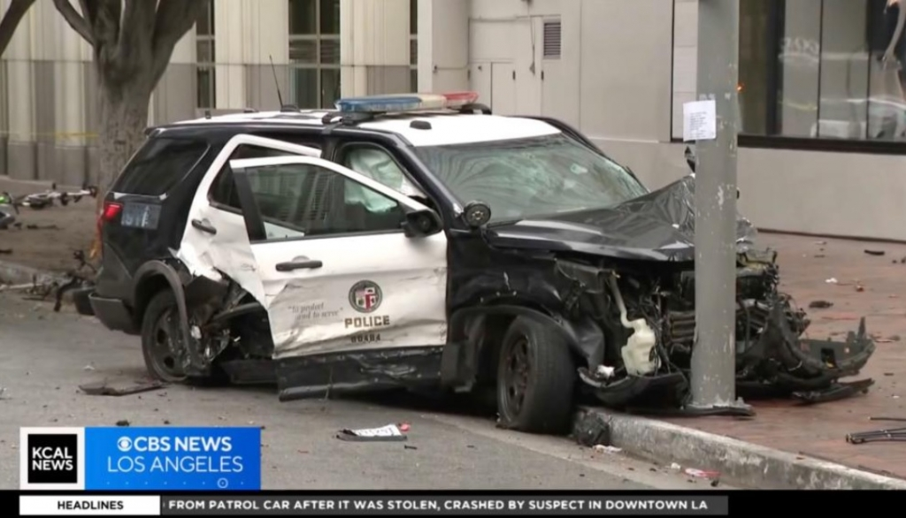

Kezdőlap
Üdvözöljük oldalunkon!
Autók
Itt találhatók a legújabb autóajánlatok.
Szolgáltatások
RENDŐRAUTÓ LOPÁS
COP CAR STOLEN

Legutóbbi szolgálati járőrkocsi lopás
A 23 éves veresmarti fiatalembert egy közúti ellenőrzés közben nem sokkal éjfél után szondáztatták meg a rendőrök, és 0,8 ezrelékes véralkoholszintet állapítottak meg nála. Mivel a gépkocsija sem volt forgalomba helyezte, bekísérték az őrsre, és bűnvádi eljárást indítottak ellene − közölte Elena Welter, a Szeben megyei rendőrség szóvivője..
További információ
A jogosítvány nélkül maradt sofőr nem akart gyalog távozni, beült egy rendőrautóba, és elhajtott. A rendőrök csak akkor vették észre, hogy hiányzik egy járőrkocsijuk, amikor éjjel egy másik sofőr a 112-es sürgősségi segélyhívón panaszolta el, hogy egy rendőrautót vezető, de szemmel láthatóan ittas civil állította meg, és a vezetői engedélyét követeli − írta meg az MTI.
Negyven perccel később a 15 kilométernyire lévő Vesztényben találták meg az álrendőrt, aki egy szórakozóhelyen akarta a kalandját megünnepelni.
Az Agerpres hírügynökség beszámolója szerint Lucian Bode belügyminiszer egy aradi sajtóértekezleten később azt mondta az esetről: ha nem lenne siralmas, akár nevetni is lehetne rajta. Hozzátette: el nem tudja képzelni, hogyan fajult odáig a helyzet, hogy egy másik sofőr polgári felelősségérzetére volt szükség egy rendőrautó ellopásának felfedezéséhez, a „kínos” ügyben mindenesetre belső vizsgálat indult a nagyszebeni rendőrségen, mert ilyen eseteknek nem szabad megtörténniük az állami intézményekben.
RENDŐRAUTÓ LOPÁS
COP CAR STOLEN
Legutóbbi szolgálati járőrkocsi lopás
A 23 éves veresmarti fiatalembert egy közúti ellenőrzés közben nem sokkal éjfél után szondáztatták meg a rendőrök, és 0,8 ezrelékes véralkoholszintet állapítottak meg nála. Mivel a gépkocsija sem volt forgalomba helyezte, bekísérték az őrsre, és bűnvádi eljárást indítottak ellene − közölte Elena Welter, a Szeben megyei rendőrség szóvivője..
További információ A jogosítvány nélkül maradt sofőr nem akart gyalog távozni, beült egy rendőrautóba, és elhajtott. A rendőrök csak akkor vették észre, hogy hiányzik egy járőrkocsijuk, amikor éjjel egy másik sofőr a 112-es sürgősségi segélyhívón panaszolta el, hogy egy rendőrautót vezető, de szemmel láthatóan ittas civil állította meg, és a vezetői engedélyét követeli − írta meg az MTI. Negyven perccel később a 15 kilométernyire lévő Vesztényben találták meg az álrendőrt, aki egy szórakozóhelyen akarta a kalandját megünnepelni. Az Agerpres hírügynökség beszámolója szerint Lucian Bode belügyminiszer egy aradi sajtóértekezleten később azt mondta az esetről: ha nem lenne siralmas, akár nevetni is lehetne rajta. Hozzátette: el nem tudja képzelni, hogyan fajult odáig a helyzet, hogy egy másik sofőr polgári felelősségérzetére volt szükség egy rendőrautó ellopásának felfedezéséhez, a „kínos” ügyben mindenesetre belső vizsgálat indult a nagyszebeni rendőrségen, mert ilyen eseteknek nem szabad megtörténniük az állami intézményekben.